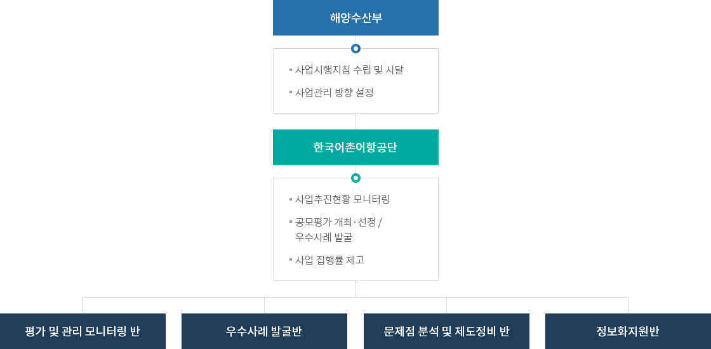
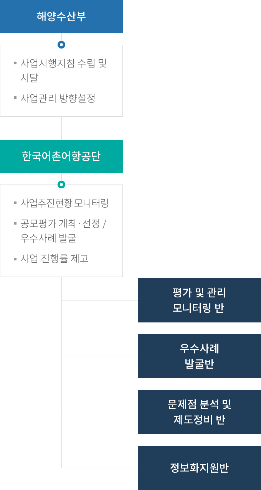

관리사업
- 홈
- 사업소개
- 친환경/스마트양식
- 친환경/스마트 양식기반 조성
- 관리사업
사업목적
- 친환경 · 스마트 양식기반 조성 및 시설구축
- 양식분야 정부지원사업의 효과적 추진을 위한 사업추진 지원 · 관리 수행
- 보조사업에 대한 현장점검 및 모니터링 수행
사업개요
| 구분 | 내용 |
|---|---|
| 사업기간 |
|
| 사업부서 |
|
| 법적근거 |
|
사업내용
친환경양식어업육성 진행사업 관리
- 사업추진현황 점검을 통해 문제점, 원인파악 및 제도개선 사항 발굴로 효율적 사업 추진 유도
- 사업시행 단계별 현안사항, 보조금 집행 및 관리 등 현장 애로사항에 대한 컨설팅 지원
친환경양식어업육성사업 완료사업 사후관리
- 사업운영 성과, 보조금으로 취득한 중요재산 관리실태 등을 점검하여 보조금법에 따른 효율적 사업운영 유도
- 사업운영 애로 발생시 분야별 민간전문가 현장밀착 컨설팅 지원
우수사례 조사 및 발굴
- 현지조사 및 모니터링 결과를 바탕으로 비용절감, 생산성 향상, 품질향상 등 우수사례 발굴
- 매년 선정된 우수사례를 바탕으로 사례분석에 따른 성과확산 방안 마련
친환경양식어업 육성 확산을 위한 설명회(지역별 · 분야별) 개최
- 지자체, 양식어업인, 수산 관련 단체 등을 대상으로 사업 공모를 위한 가이드라인, 예산신청방법 등 사업추진방향에 대한 설명회 실시
- 사업성과 및 계획 공유, 성공사례 확신 및 개선방향에 대한 토론의 장 마련
- 보조사업자 모집 및 공모평가 실시
사업추진 방법 등 개선 및 발굴
- 사업설명회 및 워크숍 개최, 현장 점검 및 사후 모니터링 수행, 보조사업 만족도 조사 결과를 바탕으로 종합적이고 체계적인 개선방안 도출
- 법제도 및 규정 등 제도 개편, 적극적 사업자 모집을 위한 실효성 향상, 관리체계 개선 등 사업 성과 극대화를 위한 분야별 개선방안 제안
- 보조사업자 모집 및 공모평가 실시
친환경 · 스마트 양식시설 및 시스템 구축
- 친환경 양식시설의 설계부터 준공까지 전과정을 체계적으로 진행함으로써 질병 노출 최소화, 항생제 저감, 친환경예방양식시스템 도입 등을 통한 건강한 양식수산물 생산기반 조성
- - 미생물을 이용한 바이오플락양식, 필터로 바이러스 및 사육수 등을 제어하는 순환여과식양식, 오존·자외선·전기분해 등으로 해수를 살균·소독하는 용수정화시설 등
- 양식시설에 4차 산업혁명 기술을 접목한 한국형 스마트 양식시설 및 시스템 구축(한국형 스마트 양식장 시범모델 조성)으로 자동화·지능화를 통한 생산 효율 극대화 및 규모화,
친환경화를 실현
- - 원격제어, 복합·자동제어, 지능형 양식, 자율경영 등
추진계획
- (1월~12월) 친환경 · 스마트 양식기반 조성 및 시설 구축
- (3월~11월) 보조사업 사후관리 모니터링 진행
※ 일정 등은 매년 상황에 맞게 변동 될 수 있음
추진체계


해양수산부
- 사업시행지침 수립 및 시달
- 사업관리 방향 설정
한국어촌어항공단
- 사업추진현황 모니터링
- 사업 개선사항 및 우수사례 발굴
- 사업 집행 지원
- 평가 및 관리 모니터링 반
- 우수사례 발굴반
- 문제점 분석 및 제도정비 반
- 정보화지원반
주요성과
| 친환경양식어업육성사업 효율성 향상 | 친환경 |
|---|---|
|
|